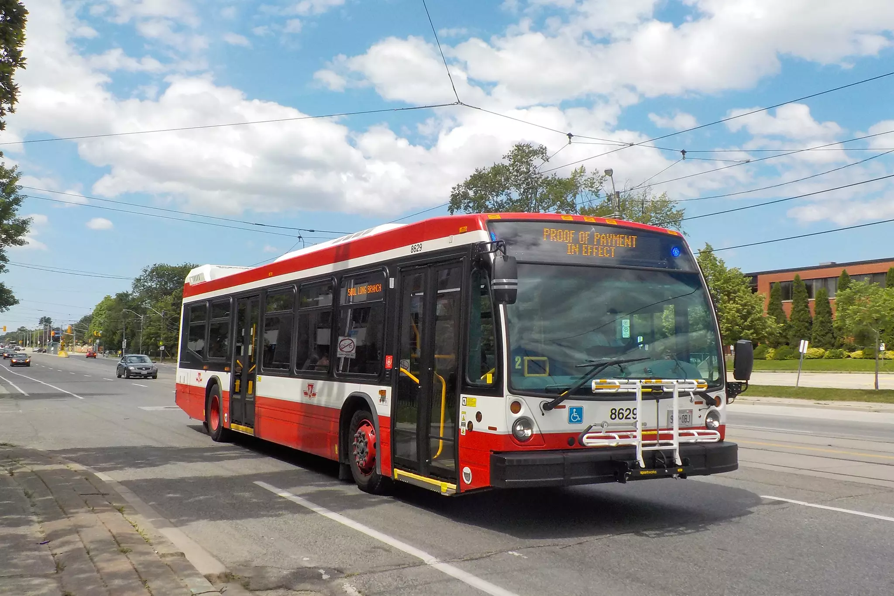
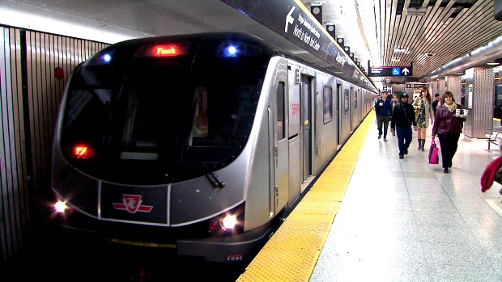
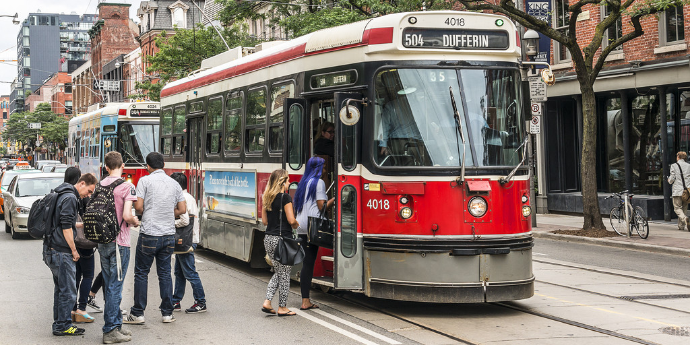

The Toronto Transit Commission (TTC) is the public transport agency that operates bus, subway, and streetcar services in Toronto, Ontario, Canada. It is the oldest and largest of the urban transit service providers in the Greater Toronto Area, with numerous connections to systems serving its surrounding municipalities.
-
TTC Bus
The TTC has more than 172 bus routes in operation, and served over 264 million riders in 2018.[2] Most bus routes serve the suburban areas of the city, and are tightly integrated with the subway system, with free transfers between the two systems, and most suburban subway stations equipped with bus terminals located within the fare paid area. Several routes run into Downtown Toronto, where buses are less used and the area is instead served by the TTC's streetcar system.
-
TTC Subway
subway lines provide service seven days a week from approximately 5:45 a.m. to 1:30 a.m. (the following day) (last train runs at approximately 1:45 in each direction) except for Sundays, in which the opening is delayed until approximately 8:00 a.m. During the overnight periods, the subway and its stations are closed to perform maintenance at track level and in the stations themselves. Overnight service is provided by buses and streetcars operating above ground. These overnight routes are issued numbers in the 300 series and are referred to as Blue Night routes, indicated by a typical TTC bus stop sign with a blue band added.
-
TTC Streetcars
Toronto's streetcar system is one of the few in North America still operating along street-running tracks. It has been operating since the mid-19th century. Horsecar service started in 1861, and 600 V DC overhead electric service began in 1892. New TTC routes since the 1940s have generally been operated by other modes of transportation, and the less busy streetcar routes have also been converted. Streetcar routes are now focused on the downtown area, with none running farther north than St. Clair Avenue, 6 kilometres (3.7 mi) from Lake Ontario.